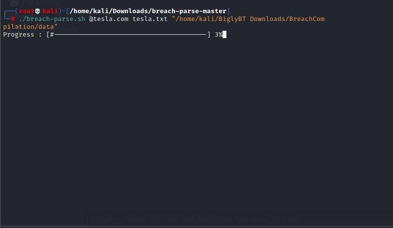

https://github.com/Pabla007/breach-parse
Here we have to install a breach parse written by heath in shell script and have to download a 41 gb file which contains passwords and user name.
After the download we have to pass 3 arguments as we haven't install it in opt folder. And remember that for me it worked using the terminal as root.
Otherwise it was giving me not able to find the directory/folder at the give location.

Than we will find if there are any repeating passwords and user names and see what we can obtain from the data.
Another website which is paid to do this Dehashed. Here also we could find the info giving the email , username , etc
https://www.dehashed.com/
After that we find any password in hash we can try to convert that hash using a website it gives a valid password or not. But the
website was down to some reason.
https://hashes.org/
So the alternative to this is https://crackstation.net/
To install any .deb file (i.e. freedownload manager in our case) will use this command for installation
sudo dpkg -i filename